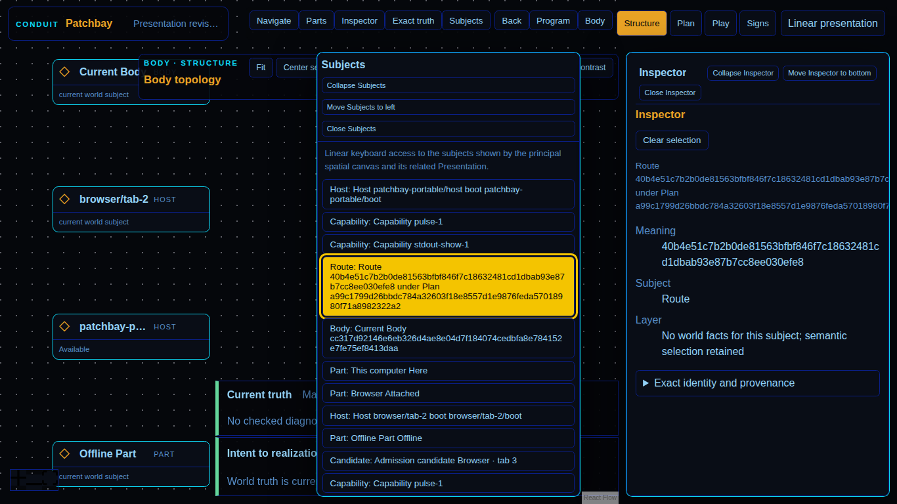

Documentary evidence captured only after semantic assertions passed.

browser-hostprove.browser-host07acdf78e43b85cf0073965ad928562c632ef071patchbay-html.route-recovery@1Screenshotimage/png187396chromium151.0.7922.341366x7680c0ae4390c3dfeaa19d79a1a0f92f5a187a9bbcf5e0743ec76af92ad0225efee84c67a3855f8a1d6c1dd77b933442a555db24474c16163126b289b80fb052d317478060302940a67f8d9ce090d4d00daeea4f0e69acbd056daccc3e3536c34a330cb11cca2f3f34c604f03399f2b218c8d4a9acc793da1b12204a714f395453317226bb6a806e7ba774f997556d86ed481f75ce5f6b1814ec35c1ca96e2e53a96patchbay-html/dom-svg@1exact-line-loss-new-plan-and-same-plan-recovery-spatially-correlated